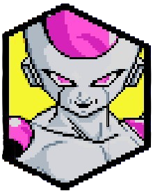
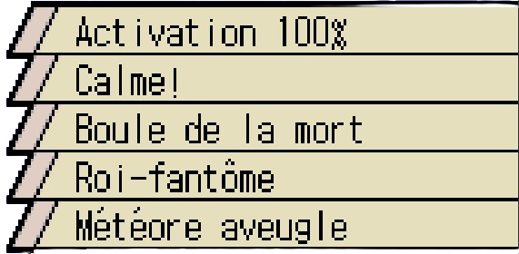
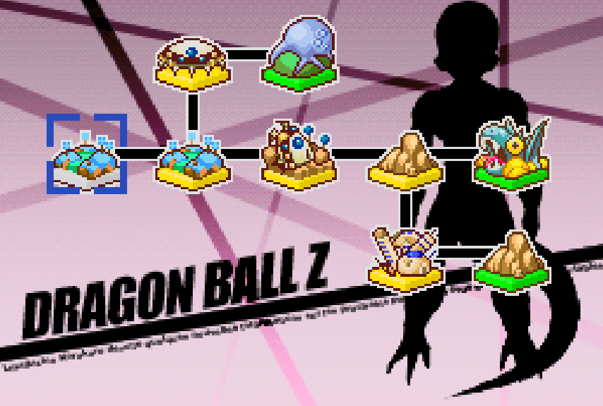
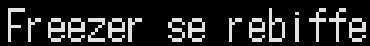
Freezer arrive sur Namek dans le but de chercher les boules de cristal, dans le but d'exaucer son souhait qui est de devenir immortel, mais malheuresement ses hommes et lui n'en trouvent aucune. Voyant que ses hommes prennent beaucoup de temps à les trouver dans chaque village namek, il commence à se mettre en colère. La cause à tout ça est le fait que Vegeta détruit toutes les unités de l'armée de Freezer qui se trouve sur son chemin. Freezer ordonne a Zarbon de contacter le Commando Ginyu de suite pour éliminer le cas de Vegeta et de récupérer les Dragon Balls, en attendant que les Forces Spéciales arrivent, l'empereur se déplace pour gérer Vegeta, mais les deux hommes de main proposent à leur chef de régler le cas du Saiyan seuls, ce qu'il accepte. Zarbon et Dodoria écrase Vegeta et ce dernier est mit hors d'état de nuire aux plans de Freezer.
Débloque Zarbon / Dodoria comme personnage de support.
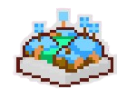
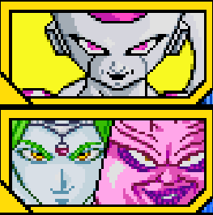


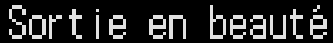
Voyant que même le Commando Ginyu n'est pas en capacité de trouver les boules de cristal, Freezer décide de faire les choses lui même et de se diriger vers la source du problème : les terriens. C'est alors que Gohan et Krilin sont localisés c'est alors que nos deux héros vont passé un mauvais moment.
Débloque l'attaque combinée avec Zarbon / Dodoria "Météore aveugle".

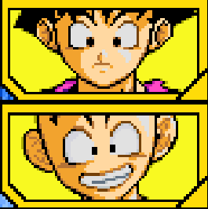
Cooler arrive sur Namek, ayant repéré Freezer car son père le Grand Roi Cold se demandait ce que prenait autant de temps à Freezer pour avoir les boules de cristal, ces dernières sont en la possession de Freezer qui les a prit en cachette.Les retouvailles entre les deux frères sont à l'image des deux fils du Roi Cold: froide et sournoise. Après la rencontre, les tentatives d'assassinat sur Freezer commençaient à être fréquentes et Freezer commence à avoir peur pour sa propre vie, il décide de retourner sur sa propre planète, depuis il décide de se venger de Cooler. Allant à la rencontre de Cooler, Freezer se rendit compte que son frère est enfermé dans une planète-machine et ne manqua pas de ricaner sur la situation de son frère. Cooler rectifie Freezer en soulignant qu'il ignore sa puissance et met en doute le fait qu'il puisse le battre, Freezer acheva le débat en soulignant le fait que lui, a pu combattre des adversaires plus forts que lui même, dés lors un combat se lança entre les deux frères. Mais même après avoir battu son frère, il a réussit à se mécaniser et est devenu Metal Cooler.

Battre Gohan et Krilin, après que le chrono soit passé à 1000.
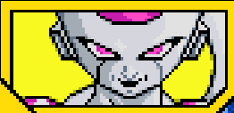

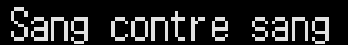
Cooler renaît en Metal Cooler et commence à se régénérer grâce à la possession de Namek par Big Gete Star. Le pouvoir de Freezer n'est pas suffisant, Metal Cooler jubile face à la faiblesse de son frère, il déclare qu'il en finira avec lui puis ce sera au tour de leur père et en suite il prendra l'Univers, quand soudainement Roi Cold arrive et blesse gravemement son fils et Freezer l'achève après un bon combat fratricide. Freezer a surpassé et vaincu Cooler, faisant la fierté du Roi Cold, pour la peine, Freezer et le roi prendra la planète machine de Cooler et la transformera en base pour leur conquête de l'Univers.
Débloque Cooler comme personnage jouable.
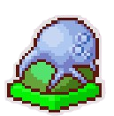
Terminer le combat contre Cooler .
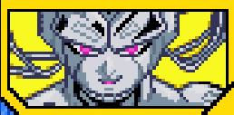
Alors que Freezer compte achever Krilin et Gohan, Goku arrive et décide de combattre le tyran. Alors que le combat avec Goku allait s'achever par le Genkidama de ce dernier, Freezer seigneur du mal très rancunier déicde de mettre hors de jeu Piccolo et de s'occuper de Krilin et Gohan, en commençant par Krilin qu'il tue de sang froid, Goku choqué par la mort de Krilin, ne sait plus quoi faire, c'est alors qu'il menace Gohan du même sort, s'en était trop pour Goku qui devient Super Saiyan, le guerrier de la légende apparut. Malgré un combat à l'avantage du Saiyan doré, Freezer essaya du mieux qu'il peut pour résister et décida de détruire Namek, en attaquant le coeur de la planète et dans exactement 120 secondes soit 5 minutes, un combat intense avant l'explosion de la planète Namek démarra et le résultat fut sans appel Goku détruisit Freezer et le laissa pour mort.
Débloque l'Attaque Ultime "Boule de la mort".
Débloque la compétence "Activation 100%".
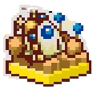

Après la défaite de l'empereur de l'Univers de la main d'un Super Saiyan, Freezer renaît sous la forme de Mecha Freezer et est bien décidé à se venger de Son Goku, il se dirige sur Terre avec son père pour en finir avec cet affront. En arrivant, il croisa un jeune homme connaissant étrangement Freezer et à la surprise générale, il était également un Super Saiyan, dés lors un combat démarra entre l'empereur mécanisé et le 2e Super Saiyan.
Débloque l'Attaque Ultime de Mecha Freezer "Roi-fantôme.

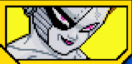
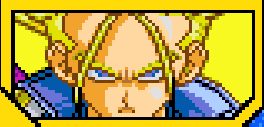
Voyant que Trunks est vraiment puissant, battu Mecha Freezer se retire, mais ce n'est que temporaire. Des années plus tard, il décide de revenir sur Terre, car il avait un compte à régler avec Trunks, dés qu'il arriva, il vit que la Terre avait bien changée, elle était dévastée, il entreprit les recherches et le retrouva. Il retrouva Trunks et lui annonça sa vengeance et assure sa victoire grâce à un entraînement qu'il a poursuivit durant des années. Il vit que Trunks avait une boule de cristal, soudainement il eut l'idée de remettre sur la table son souhait d'immortalité, il décide donc de l'éliminer et de lui prendre la boule de cristal. Avant de tomber au sol vaincu, Trunks dit à Freezer que l'Univers est en danger, mais cela laisse indifférent Freezer qui maintenant qu'il a vaincu un Super Saiyan et qu'il a eut les boules de cristal, il ne fut jamais aussi proche de son but, il jubile face à sa victoire écrasante et se dirigea vers la prochaine étape.
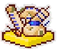
Terminer le combat contre Trunks en faisant un perfect
Mecha Freezer comptait exaucé son voeu à Shenron, quand Goku arrive et l'affronte. Après avoir vaincu Goku, il exauce son souhait d'être immortel et après avoir obtenu son souhait, il entreprend de conquérir l'Univers, il y arrivera un jour ou l'autre, de toute façon il a tout le temps devant lui après tout
Débloque l'attaque combinée avec Goku "Echange de corps spécial".
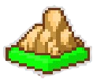
Terminer le combat contre C18.
Alors qu'il allait finir sa phrase, en un instant, Trunks le découpa en deux et le désintégra, son père eut un sort tout aussi rapide. La menace de la famille de Freezer fut éteinte en quelques coups de lame. Mecha Freezer se retrouva dans l'Autre Monde, où il rencontra Cell qui périt aussi face aux Z-Warriors, notamment Gohan et les deux vilains devinrent alliés pour combattre Son Goku même mort. Les deux s'entrainèrent et semblaient imbattables dans l'Au-Delà, c'est alors qu'un combat de morts démarra. Alors que Cell et Freezer tout content de leur victoire jubiler face à leur victoire écrasante sur Goku, on se rendit compte qu'en vérité, Goku avait fait exprès de perdre pour que les deux tyrans de l'Autre Monde lui lâche les baskets et arrêtent de tout détruire. Se rendant compte de la supercherie, Mecha Freezer décida donc de comabttre Goku jusqu'à qu'une vraie victoire soit déclarée.
Débloque Mecha Freezer comme personnage jouable.
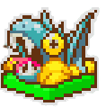
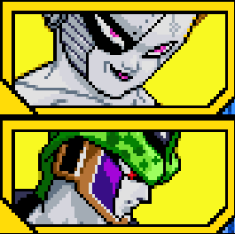